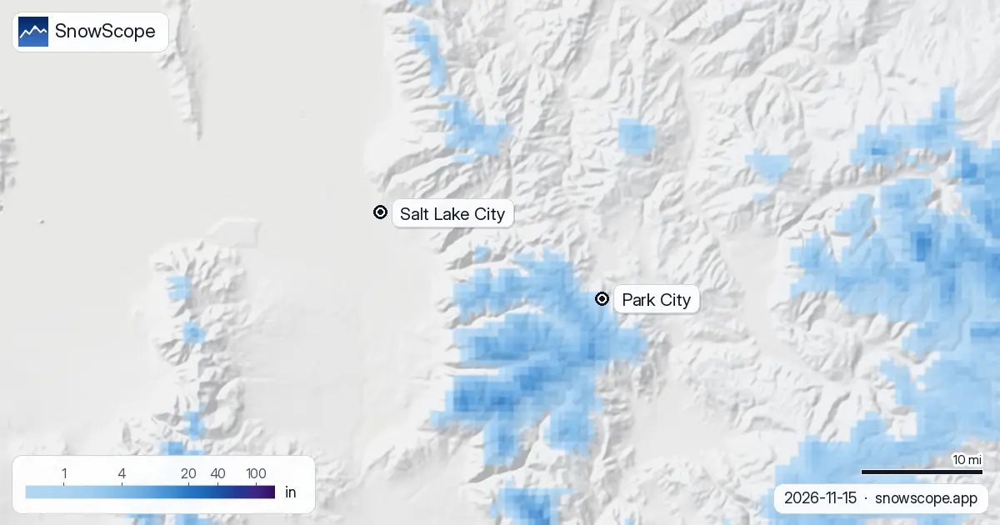

Park City, Utah snowfall: about 5 in up high this weekend, rain in town (13 November 2026)
Is there snow in Park City right now? Hardly: our snow map shows a trace, 0.4 in (1 cm), near the top at 10,000 ft and bare ground at mid-mountain and the base. That changes this weekend. A storm reaches the Wasatch from Friday night into Saturday, and on our numbers it leaves about 5 in (12 cm) near the summit and 4.5 in at mid-mountain. In town, and at the base, it falls mostly as rain.
See the live snow forecast for Park City in the SnowScope appSnow depth, powder alerts and the 3D map, free.
One storm, three very different totals
Park City Mountain is big: on our mapping 159 mi (256 km) of runs and 43 lifts, with about 3,100 ft between the base at 6,900 ft and the top at 10,000 ft. That spread is why one storm reads so differently from Main Street and from the high bowls.
Summit, around 10,000 ft: about 5 in (12 cm) from the weekend storm. Mid-mountain, around 8,400 ft: 4.5 in (11.5 cm). Base, around 6,900 ft: nothing that stays. The snow level sits at about 7,400 to 7,700 ft, so the lower slopes get rain or wet mixed snow, and in the reference forecasts about 60 % of what falls at the base comes as rain.
How sure is the 5 inches?
Fairly. We check our number against several independent forecasts and the official one before we publish. For the top of the mountain they give between 3 and 9 in for this storm, and the official forecast about 4 in, so our 5 in sits in the middle of the pack.
In Salt Lake City and the valleys below the snow level this is a rain event. On the snow map, drawn for Sunday after the storm, the white covers the high Wasatch south-west of town, while Salt Lake City and the valley floors stay grey.

Snowfall through next week
The weekend is only the start. Colder air follows, the snow level drops to about 6,200 to 6,900 ft, and over seven days our totals reach 12 in (31 cm) at the summit, 10 in (26 cm) at mid-mountain and 3 in (8 cm) at the base. The other forecasts we check run higher for the top, 15 to 27 in for the week, so ours is the careful number.
Twelve inches in a week would be close to a normal November. In the middle of our 46 past winters (1980-81 to 2025-26) the summit holds 13 in (34 cm) in November, mid-mountain 8 in (21 cm) and the base 4 in (11 cm). The spread is wide: one November in ten has just 1 in up top, another has 43 in.
Where the season stands
This start is late. The first lasting snow usually reaches the summit around 10 October, mid-mountain around 12 October and the base around 23 October. December is when Park City usually builds its base, with 41 in (103 cm) at the summit, 26 in (67 cm) at mid-mountain and 16 in (41 cm) at the base in a middle winter.
Last winter was the thinnest of our 46 at every height: the summit peaked at 58 in (148 cm) and the base at 15 in (38 cm), with snow on 140 days at the top against a usual 208. The long trend points the same way. The middle peak at the summit was 120 in (304 cm) in the first 15 of our winters and 101 in (257 cm) in the last 15.
Tips for skiers
- For a first look, trust the upper-mountain number; the base will stay brown until the snow level falls below about 6,900 ft.
- Lift openings and snowmaking are the resort's call: check its snow report before you drive up.
- Early snow on the Wasatch often becomes a weak layer: read the Utah Avalanche Center forecast before any uphill or backcountry skiing.
More maps (external sites)
References and credits
- Park City Mountain, official site (lifts, opening day, snow report) www.parkcitymountain.com/
- Utah Avalanche Center, Wasatch backcountry forecasts utahavalanchecenter.org/
About these numbers
Snow numbers: the SnowScope snow model, run of 12 November 2026, at three heights of the resort (values for the area, not the resort's snow stake), and our snow history, 46 past winters (1980-81 to 2025-26), a model of the past corrected for height. Inches and feet are rounded from metric values. Snow level, rain share and the comparison range: independent weather forecasts and the official US forecast read at the same heights, the check every SnowScope post passes before it goes out. Run length and lift count: OpenSkiMap mapping. Forecasts change: look at the map before you go.
Official avalanche bulletins: Utah Avalanche Center
Cite this report
For research, teaching or the press: the numbers and charts are free to reuse under CC BY 4.0 with this citation.
SnowScope (2026), Park City, Utah snowfall: about 5 in up high this weekend, rain in town (13 November 2026), https://snowscope.app/blog/en/2026/11/park-city-utah-snowfall-weekend-storm-13-november-2026.html, accessed 2026-11-13
SnowScope (Atlas Labs). (2026, November 13). Park City, Utah snowfall: about 5 in up high this weekend, rain in town (13 November 2026). SnowScope snow reports. https://snowscope.app/blog/en/2026/11/park-city-utah-snowfall-weekend-storm-13-november-2026.html
BibTeX
@misc{snowscope2026parkcityutahsnowfallweek,
author = {{SnowScope (Atlas Labs)}},
title = {Park City, Utah snowfall: about 5 in up high this weekend, rain in town (13 November 2026)},
year = {2026},
month = nov,
howpublished = {\url{https://snowscope.app/blog/en/2026/11/park-city-utah-snowfall-weekend-storm-13-november-2026.html}},
note = {Published 2026-11-13 17:31 UTC; accessed 2026-11-13}
}· CC BY 4.0 · Methods, data and tools →
Park City: snow and temperature by height, this winter vs last (tools) →
Follow Park City
Free: a message when fresh snow is coming, and the forecast every morning.
More snow reports

Over the next days the 0 °C level in the US West should move between 8,333 ft (2,540 m) and 13,780 ft (4,200 m), according to our forecast. At the …

Is this a good start to the winter in the US West? 5 resorts in the US West, 46 past winters, one date: here is how today compares. Clearly above …

US West snow report, 11 November. Until 14 November the forecast gives 17 in (43 cm) at Mt. Shasta Ski Park, 15 in (39 cm) at Kirkwood and 14 in …